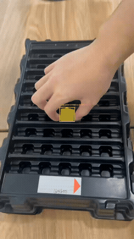

Embodied AI
VLA 微调、机器人视觉、抓取区域感知、点云重建和机器人框架接入。这里只放主线能力和可追踪记录。
VLA 微调、机器人视觉、抓取区域感知、点云重建和机器人框架接入。这里只放主线能力和可追踪记录。
GIF 预览 + 完整 MP4。记录视觉检测、抓取区域和后续末端定位输入，不做广告式包装。

工程记录、论文笔记、阶段复盘会进入博客模块。主页只保留阅读和浏览，不做操作台。
这里是个人成长博客，不是简历页。它用来记录具身智能、机器人视觉、论文阅读、项目复盘和工程踩坑。
当前重点是 VLA 微调、机器人视觉、抓取区域感知、点云重建，以及 LeRobot / Octo 等框架接入。
Camera-view demo with detection box and grasp-region annotation. It can be used as an input stage for end-effector localization, tracking, and grasp point estimation.
这里展示 Markdown 博客文章，用来记录阅读、项目、Debug 和阶段复盘。
No matching posts.